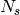
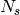

LoadMuonNexus dialog.
Table of Contents
The LoadMuonNexus algorithm will read the given NeXus Muon data file Version 2 and use the results to populate the named workspace. LoadMuonNexus may be invoked by LoadNexus if it is given a NeXus file of this type.
| Name | Direction | Type | Default | Description |
|---|---|---|---|---|
| Filename | Input | string | Mandatory | The name of the Nexus file to load. Allowed extensions: [‘.nxs’] |
| OutputWorkspace | Output | Workspace | Mandatory | The name of the workspace to be created as the output of the algorithm. For multiperiod files, one workspace will be generated for each period |
| SpectrumMin | Input | number | Optional | Index number of the first spectrum to read (default 1) |
| SpectrumMax | Input | number | Optional | Index of last spectrum to read (default the last spectrum) |
| SpectrumList | Input | int list | Array, or comma separated list, of indexes of spectra to load | |
| AutoGroup | Input | boolean | False | Determines whether the spectra are automatically grouped together based on the groupings in the NeXus file, only for single period data (default no) |
| EntryNumber | Input | number | 0 | 0 indicates that every entry is loaded, into a separate workspace within a group. A positive number identifies one entry to be loaded, into one worskspace |
| MainFieldDirection | Output | string | Output the main field direction if specified in Nexus file (default Transverse). Allowed values: [‘Transverse’, ‘Longitudinal’] | |
| TimeZero | Output | number | Time zero in units of micro-seconds (default to 0.0) | |
| FirstGoodData | Output | number | First good data in units of micro-seconds (default to 0.0) | |
| DeadTimeTable | Output | Workspace | Table or a group of tables containing detector dead times | |
| DetectorGroupingTable | Output | Workspace | Table or a group of tables with information about the detector grouping stored in the file (if any) |
The algorithm LoadMuonNexus will read a Muon Nexus data file (original format) and place the data into the named workspace. The file name can be an absolute or relative path and should have the extension .nxs or .NXS. If the file contains data for more than one period, a separate workspace will be generated for each. After the first period the workspace names will have “_2”, “_3”, and so on, appended to the given workspace name. For single period data, the optional parameters can be used to control which spectra are loaded into the workspace. If spectrum_min and spectrum_max are given, then only that range to data will be loaded. If a spectrum_list is given than those values will be loaded.
The log data in the Nexus file (NX_LOG sections) will be loaded as TimeSeriesProperty data within the workspace. Time is stored as seconds from the Unix epoch.
The corrected_times field of the Nexus file is used to provide time bin data and the bin edge values are calculated from these bin centre times.
To determine if a file contains data from more than one period the field
switching_states is read from the Nexus file. If this value is
greater than one it is taken to be the number of periods,  of
the data. In this case the  spectra in the histogram_data
field are split with
of
the data. In this case the  spectra in the histogram_data
field are split with  assigned to each period.
assigned to each period.
The ChildAlgorithms used by LoadMuonNexus are:
Version 1 supports the loading version 1.0 of the muon nexus format. This is still in active use, if the current version of LoadMuonNexus detects that it has been asked to load a previous version muon nexus file it will call the previous version of the algorithm to perform the task.
Categories: Algorithms | DataHandling | Nexus | Muon
{kind=link}